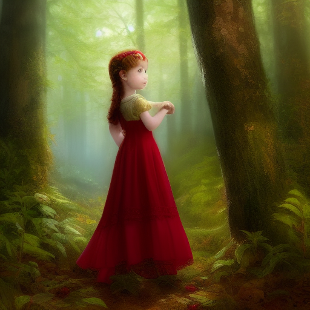

Once upon a time, in a small village nestled in a lush green valley, there lived a young girl named Lily. Lily had a heart full of curiosity and a mind brimming with imagination. She would spend her days exploring the enchanting woods surrounding the village, often getting lost in the world of fairy tales and magical creatures.
